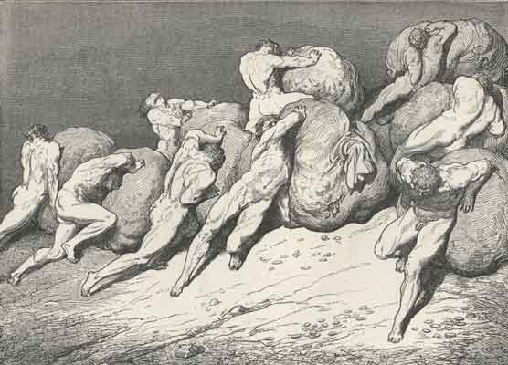

Daryush "Roosh" Valizadeh created ROK in October 2012. You can visit his blog at RooshV.com or follow him on Twitter and Facebook.


The Brothers Karamazov is a book published by Russian writer Fyodor Dostoyevsky in 1880 that explores themes of spirituality, psychology, and the changing nature of Russia. It’s a mammoth 800-page piece of work that would never get written today, but nonetheless provides value to those who read it, especially if they are interested in understanding the Russian soul.
Here are my favorite quotes from the book…
A man who lies to himself and listens to his own lie comes to a point where he does not discern any truth either in himself or anywhere around him, and thus falls into disrespect towards himself and others. Not respecting anyone, he ceases to love, and having no love, he gives himself up to passions and coarse pleasures, in order to occupy and amuse himself, and in his vices reaches complete bestiality, and it all comes from lying continually to others and to himself.
Without self-awareness, man is not able to see the errors of his behavior, and will always forge down the wrong path as if blindfolded. Even worse, he may attack anyone who attempts to remove his blindfold.
‘I love you madly,’ she says, ‘even if you do not love me— no matter, only be my husband. Don’t be afraid, I shan’t hinder you in any way, I’ll be your furniture, the rug you walk on … I want to love you eternally, I want to save you from yourself …’
I don’t believe it is possible to find a woman who would state the same thing today. Instead she’d explain, “I love you madly in this moment only, and I expect you to treat me like your queen. Be afraid, because if you hinder me, I will walk on you as if you’re my living room rug, and ensure that you do not escape my punishment.”
There is no more ceaseless or tormenting care for man, as long as he remains free, than to find someone to bow down to as soon as possible. But man seeks to bow down before that which is indisputable, so indisputable that all men at once would agree to the universal worship of it. For the care of these pitiful creatures is not just to find something before which I or some other man can bow down, but to find something that everyone else will also believe in and bow down to, for it must needs be all together. And this need for communality of worship is the chief torment of each man individually, and of mankind as a whole, from the beginning of the ages.

A man may make bold proclamations about being free, but as soon as he becomes free, he quickly seeks out an object or being to submit to, whether it’s a vice, a woman, or a god. It is impossible for a man to exist in nature without worshiping what he believes is higher than himself.
With bread you were given an indisputable banner: give man bread and he will bow down to you, for there is nothing more indisputable than bread. But if at the same time someone else takes over his conscience— oh, then he will even throw down your bread and follow him who has seduced his conscience. In this you were right. For the mystery of man’s being is not only in living, but in what one lives for. Without a firm idea of what he lives for, man will not consent to live and will sooner destroy himself than remain on earth, even if there is bread all around him.
As soon as a man sates his needs, he will then develop a new need which begs for satisfaction. The way to control men, it seems, is to keep them in an enduring state of need, so that they don’t escape the slavish cycle of worship.
Freedom, free reason, and science will lead them into such a maze, and confront them with such miracles and insoluble mysteries, that some of them, unruly and ferocious, will exterminate themselves; others, unruly but feeble, will exterminate each other; and the remaining third, feeble and wretched, will crawl to our feet and cry out to us: “Yes, you were right, you alone possess his mystery, and we are coming back to [the church]— save us from ourselves.”
Freedom from God and tradition did not lead to true freedom. Instead, it led to submission to egalitarian ideas, rationale that is manipulated by the ruling class, and the female form, which is lofted above us as the new gods that must be worshiped by all.
The world has proclaimed freedom, especially of late, but what do we see in this freedom of theirs: only slavery and suicide! For the world says: “You have needs, therefore satisfy them, for you have the same rights as the noblest and richest men. Do not be afraid to satisfy them, but even increase them”— this is the current teaching of the world. And in this they see freedom. But what comes of this right to increase one’s needs? For the rich, isolation and spiritual suicide; for the poor, envy and murder, for they have been given rights, but have not yet been shown any way of satisfying their needs.
[…]
Taking freedom to mean the increase and prompt satisfaction of needs, they distort their own nature, for they generate many meaningless and foolish desires, habits, and the most absurd fancies in themselves. They live only for mutual envy, for pleasure-seeking and self-display. To have dinners, horses, carriages, rank, and slaves to serve them is now considered such a necessity that for the sake of it, to satisfy it, they will sacrifice life, honor, the love of mankind, and will even kill themselves if they are unable to satisfy it.
Materialism has failed, as Dostoevsky predicted. It produced such a spiritual void that the suicide switch of society has turned on by those on the left who want to destroy us all. While they actively engage in the promotion of sterility, authoritarianism, and death, the elite class is enjoying the decline to experience riches that were not fathomable in Dostoevsky’s time.
And therefore the idea of serving mankind, of the brotherhood and oneness of people, is fading more and more in the world, and indeed the idea now even meets with mockery, for how can one drop one’s habits, where will this slave go now that he is so accustomed to satisfying the innumerable needs he himself has invented? He is isolated, and what does he care about the whole? They have succeeded in amassing more and more things, but have less and less joy.
In a world where anything can be bought, what is valuable? If you can travel to anywhere, where is worth visiting? If you can take a picture every second of your life, which picture deserves another look? Pleasures that would have satisfied kings of past elicit a mere shrug from the normies of today, and even if they release themselves from the material and embark on a journey to “help others,” it comes not out of personal charity but to signal moral superiority, that I am better than you because I’m helping someone other than you. The drive to “help” becomes a personal weapon to attack others because it allows one to receive an egotistical pleasure that is higher than material pleasure.
If the wickedness of people arouses indignation and insurmountable grief in you, to the point that you desire to revenge yourself upon the wicked, fear that feeling most of all; go at once and seek torments for yourself, as if you yourself were guilty of their wickedness. Take these torments upon yourself and suffer them, and your heart will be eased, and you will understand that you, too, are guilty, for you might have shone to the wicked, even like [Jesus], but you did not. If you had shone, your light would have lighted the way for others, and the one who did wickedness would perhaps not have done so in your light.
It’s easier to declare someone an enemy than to hold a mirror to ourselves and identity the true source of our anger. Instead, our first instinct when someone conflicts with our views is to mock them and then share the mockery for all to see, which I’ve personally done on numerous occasions. When you’ve lost the connection with your fellow man, and when your neighbor acts as if he’s from another country, there is no motivation to seek mutual understanding.
Your work is for the whole, your deed is for the future. Never seek a reward, for great is your reward on earth without that: your spiritual joy, which only the righteous obtain.
I can’t help but think that this work would not succeed today because of its length. Attention spans are too short and patience is too limited for all but continual drama and action. Instead, it gives us a slice of family conflict and soul-searching as a country embarked on great change that mirrored much of what happened in the West. In Dostoevsky we can add another prescient author who clearly warned us about what would happen if we killed tradition and God.
This article was originally published on Roosh V.
Read More: “The Brothers Karamazov” on Amazon